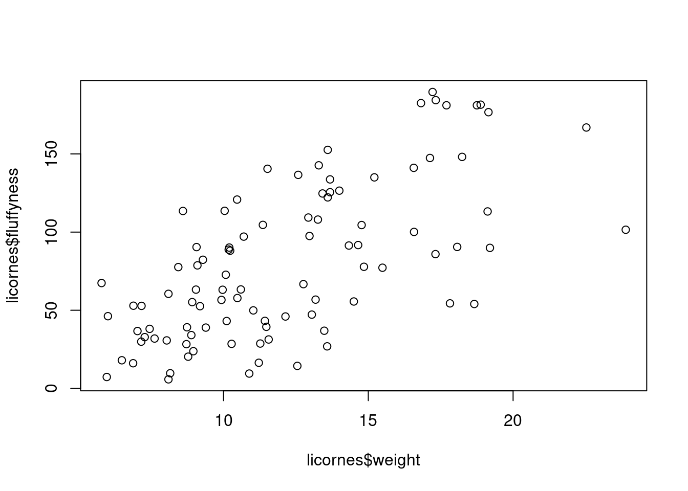
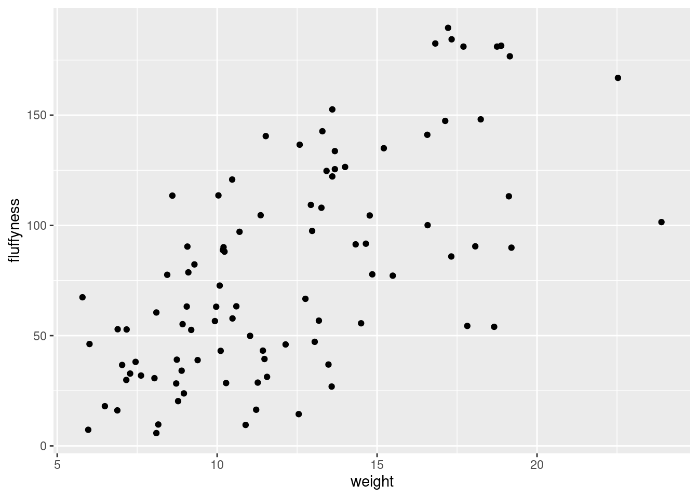
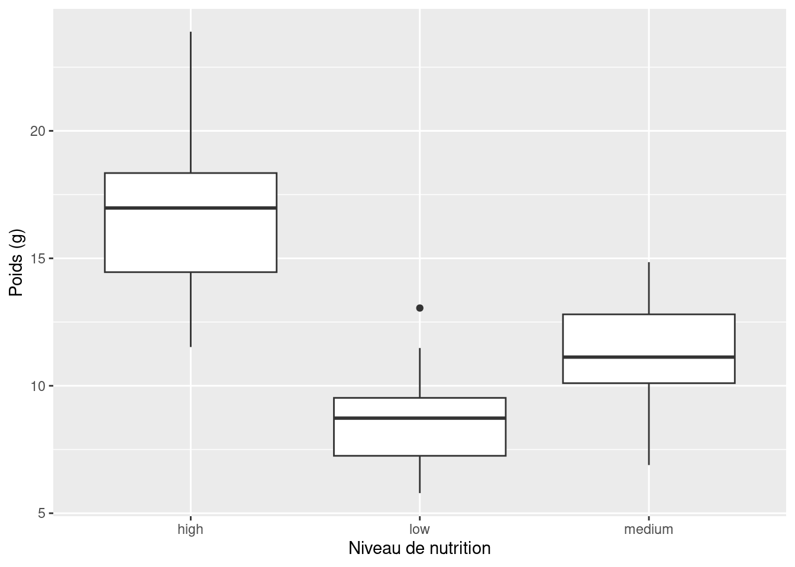
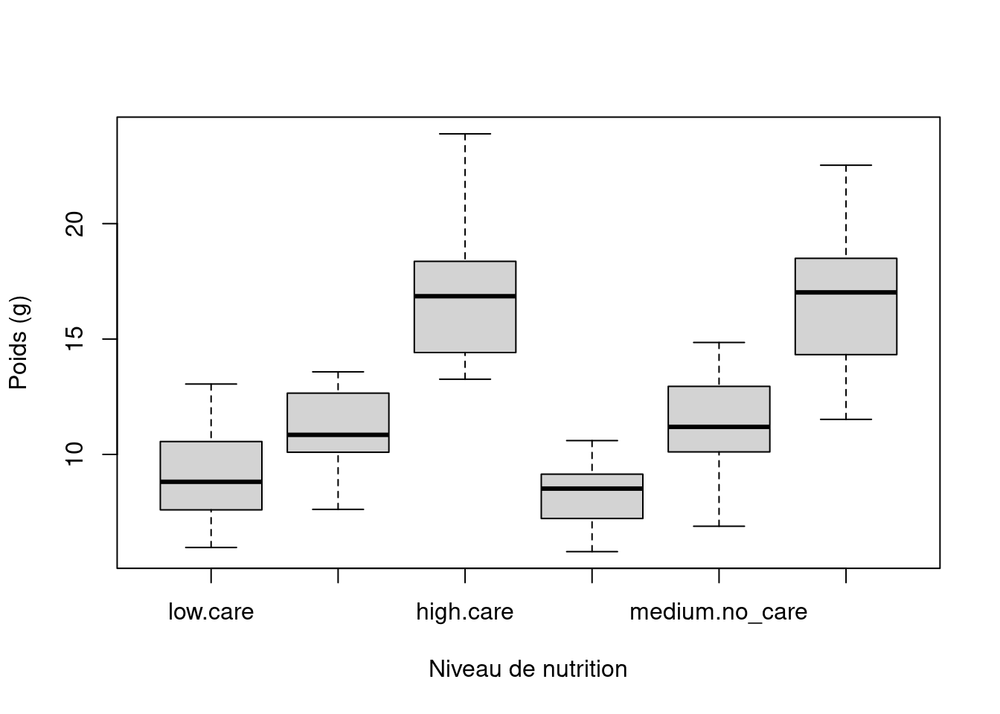

4 Figures
La synthèse de vos données, sous forme numérique ou graphique, est un élément important (bien que souvent négligé) de toute analyse de données. Heureusement, R dispose d’excellentes capacités graphiques et peut être utilisé pour produire des graphiques pour l’exploration initiale des données, la validation des modèles ou des figures très complexes destinées à la publication. Il existe trois systèmes principaux pour produire des graphiques dans R : base R graphics, lattice graphics et ggplot2.
Le système graphique R de base est le système de traçage original qui existe (et qui a évolué) depuis les premiers jours de R. Lors de la création de graphiques avec base R, nous avons tendance à utiliser des fonctions de haut niveau (comme la fonction plot() ) pour créer notre tracé, puis utiliser une ou plusieurs fonctions de bas niveau (comme la fonction lines() et text() etc.) pour ajouter des informations supplémentaires à ces tracés. Cela peut sembler un peu bizarre (et prendre du temps) lorsque vous commencez à créer des tracés fantaisistes dans R, mais cela vous permet de personnaliser presque tous les aspects de votre tracé et de le complexifier par couches. Le revers de cette flexibilité est que vous devrez souvent prendre de nombreuses décisions sur la manière dont vous souhaitez que votre graphique se présente plutôt que de compter sur le logiciel pour prendre ces décisions à votre place. Cela dit, il est généralement très rapide et facile de générer des graphiques exploratoires simples à l’aide de graphiques R de base.
Le système de treillis est implémenté dans le module lattice() qui est préinstallé avec l’installation standard de R. Cependant, il n’est pas chargé par défaut, vous devez donc d’abord utiliser la commande library(lattice) pour accéder à toutes les fonctions de traçage. Contrairement aux graphiques de base de R, les tracés de treillis sont généralement générés en une seule fois à l’aide d’une seule fonction. Il n’est donc pas nécessaire d’utiliser des fonctions de traçage de haut et de bas niveau pour personnaliser l’aspect d’un tracé. Il n’est donc pas nécessaire d’utiliser les fonctions de traçage de haut et de bas niveau pour personnaliser l’apparence d’un tracé. Les tracés en treillis prennent également plus de décisions pour vous en ce qui concerne l’aspect des tracés, mais cela a un coût, car la personnalisation des tracés en treillis pour qu’ils aient exactement l’aspect que vous souhaitez peut s’avérer assez complexe. Les diagrammes en treillis se prêtent particulièrement bien au traçage de données multidimensionnelles complexes à l’aide de diagrammes en panel (également appelés diagrammes en treillis). Nous verrons quelques exemples de ces types de tracés plus loin dans ce chapitre.
ggplot2 était basé sur un livre intitulé Grammaire graphique de Wilkinson (2005). Pour un résumé intéressant du livre de Wilkinson [ici][leland-summary] . Le Grammaire graphique décompose les figures en leurs différents éléments (par ex. les statistiques sous-jacentes, l’arrangement géométrique, le thème, voir Figure 4.1). Les utilisateurs sont ainsi en mesure de manipuler chacun de ces composants (i.e. couches) et de produire une figure sur mesure répondant à leurs besoins spécifiques.
Chacun de ces systèmes a ses forces et ses faiblesses et nous les utilisons souvent de manière interchangeable. Dans ce chapitre, nous vous présenterons la fonction de traçage de base de R et la fonction de traçage de base deggplot2 . Il est important de noter que ggplot2 n’est pas nécessaire de faire des figures “fantaisistes” et informatives dans R. Si vous préférez utiliser les graphiques de base de R, n’hésitez pas à continuer, car presque tous les graphiques de base de R sont en anglais. ggplot2 peuvent être créées à l’aide de la base R (nous utilisons souvent l’une ou l’autre approche en fonction de ce que nous faisons). La différence entreggplot2 et la base R est la façon dont vous obtenir plutôt que des différences substantielles dans le produit final lui-même. Il s’agit néanmoins d’une croyance répandue, probablement due au fait qu’il est (à notre avis du moins) plus facile d’obtenir une silhouette modérément attrayante avec ggplot2 car de nombreuses décisions esthétiques sont prises pour l’utilisateur, sans qu’il sache nécessairement qu’une décision a été prise !
Dans cet esprit, commençons à créer quelques figures.
4.1 Tracés de base simples en R
Il existe de nombreuses fonctions dans R pour produire des graphiques, des plus simples aux plus complexes. Il est impossible de couvrir tous les aspects de la production de graphiques en R dans ce livre. Nous vous présenterons donc la plupart des méthodes courantes de représentation graphique des données et nous décrirons comment personnaliser vos graphiques plus tard dans Section 4.5.
La fonction de haut niveau la plus couramment utilisée pour produire des graphiques en R est (sans surprise) la fonction plot() fonction. Par exemple, traçons le graphique weight de licornes de notre unicorns que nous avons importé dans Section 3.3.2.
R a tracé les valeurs de weight (sur l’axe des y) en fonction d’un indice puisque nous ne traçons qu’une seule variable. L’indice est simplement l’ordre des weight dans le cadre de données (1 en premier dans le cadre de données et 97 en dernier). L’indice weight a été automatiquement inclus comme étiquette de l’axe des y et les échelles des axes ont été automatiquement définies.
Si nous n’avions inclus que la variable weight plutôt que unicorns$weight, l’indicateur plot() affichera une erreur car la variable weight n’existe que dans le unicorns l’objet “data frame”.
plot(weight)
## Error in plot(weight) : object 'weight' not foundComme de nombreuses fonctions de traçage de base de R n’ont pas d’objet data = pour spécifier directement le nom de la base de données, nous pouvons utiliser la fonction with() en combinaison avec la fonction plot() comme raccourci.
Pour tracer un nuage de points d’une variable numérique par rapport à une autre variable numérique, il suffit d’inclure les deux variables en tant qu’arguments lors de l’utilisation de la fonction plot() comme arguments. Par exemple, pour tracer fluffyness sur l’axe des y et weight de l’axe des x.
plot(x = unicorns$weight, y = unicorns$fluffyness)
Il existe une approche équivalente pour ces types de parcelles, ce qui est souvent source de confusion au début. Vous pouvez également utiliser la notation de formule lors de l’utilisation de la fonction plot() lorsque vous utilisez la fonction Cependant, contrairement à la méthode précédente, la méthode de la formule exige que vous spécifiiez d’abord la variable de l’axe des y, puis un ~ puis la variable de l’axe des x.
plot(fluffyness ~ weight, data = unicorns)
Ces deux approches étant équivalentes, nous vous suggérons de choisir celle que vous préférez et de l’appliquer.
Vous pouvez également spécifier le type de graphique que vous souhaitez tracer en utilisant l’argument type =. Vous pouvez tracer uniquement les points (type = "p" c’est l’option par défaut), seulement les lignes (type = "l"), les points et les lignes connectés (type = "b"), les points et les lignes avec les lignes passant par les points (type = "o") et les points vides reliés par des lignes (type = "c"). Par exemple, utilisons nos connaissances acquises lors de Section 2.4 pour générer deux vecteurs de nombres (my_x et my_y), puis tracer l’un par rapport à l’autre en utilisant différents type = pour voir quels types de tracés sont produits. Ne vous préoccupez pas des par(mfrow = c(2, 2)) ligne de code pour l’instant. Nous l’utilisons simplement pour diviser le dispositif de traçage afin de pouvoir placer les quatre tracés sur le même dispositif pour gagner de la place. Voir Section 4.4 dans le chapitre pour plus de détails à ce sujet. Le graphique en haut à gauche est type = "l", le graphe en haut à droite type = "b" en bas à gauche type = "o" et en bas à droite est type = "c".
my_x <- 1:10
my_y <- seq(from = 1, to = 20, by = 2)
par(mfrow = c(2, 2))
plot(my_x, my_y, type = "l")
plot(my_x, my_y, type = "b")
plot(my_x, my_y, type = "o")
plot(my_x, my_y, type = "c")
Il est vrai que les parcelles que nous avons produites jusqu’à présent n’ont rien d’extraordinaire. Cependant, les plot() est incroyablement polyvalente et peut générer un large éventail de tracés que vous pouvez personnaliser à votre guise. Nous verrons comment personnaliser les ggplots dans Section 4.5. Pour l’anecdote, la fonction plot() est également ce que l’on appelle une fonction générique, ce qui signifie qu’elle peut modifier son comportement par défaut en fonction du type d’objet utilisé comme argument. Vous en verrez un exemple dans Section 9.6 où nous utilisons la fonction plot() pour générer des graphiques de diagnostic des résidus d’un objet de modèle linéaire (je parie que vous ne pouvez pas attendre !).
4.2 ggplot2
Comme nous l’avons déjà mentionné ggplot la grammaire nécessite plusieurs éléments pour produire un graphique (Figure 4.1) et un minimum de 3 éléments est nécessaire :
- un cadre de données
- un système de cartographie définissant x et y
- une couche géométrique
Les données et la cartographie sont fournies dans le cadre de l’appel à l’application ggplot() à l’aide de la fonction data et mapping arguments. La couche géométrique est ajoutée à l’aide de fonctions spécifiques.
En fait, toutes les couches sont nécessaires, mais les valeurs simples par défaut des autres couches sont automatiquement fournies.
Pour refaire la Figure 4.2, qui ne contient qu’un nuage de points, nous pouvons utiliser la commande geom_point() fonction.
ggplot(
data = unicorns,
mapping = aes(x = weight, y = fluffyness)
) +
geom_point()

Maintenant que nous avons une compréhension de base de ggplotnous pouvons explorer quelques graphiques en utilisant à la fois le code de base de R et le code ggplot
4.3 Tracés simples
4.3.1 Diagrammes de dispersion
Type de diagramme simple très utile pour étudier la relation entre deux variables, par exemple. Voici le code pour le faire en utilisant la base R (Figure 4.2)
plot(fluffyness ~ weight, data = unicorns)ou ggplot (Figure 4.3)
ggplot(
data = unicorns,
mapping = aes(x = weight, y = fluffyness)
) +
geom_point()Un grand avantage de ggplot pour les nuages de points simples est la facilité avec laquelle nous pouvons ajouter une régression, une ligne plus lisse (loes ou gam) au tracé en utilisant stat_smooth()pour ajouter une couche statistique au graphique.
ggplot(
data = unicorns,
mapping = aes(x = weight, y = fluffyness)
) +
geom_point() +
stat_smooth()
4.3.2 Histogrammes
Les histogrammes de fréquence sont utiles pour se faire une idée de la distribution des valeurs d’une variable numérique. En utilisant la base R, la fonction hist() prend un tableau numérique comme argument principal. Dans ggplot, nous devons utiliser geom_histogram(). Générons un histogramme de la height valeurs.
Avec la base R
hist(unicorns$height)
avec ggplot2
ggplot(unicorns, aes(x = height)) +
geom_histogram()`stat_bin()` using `bins = 30`. Pick better value with `binwidth`.Les hist() et geom_histogram() crée automatiquement les points de rupture (ou bins) dans l’histogramme, à moins que vous n’indiquiez le contraire à l’aide de la fonction breaks = pour spécifier le contraire. Par exemple, disons que nous voulons tracer notre histogramme avec des points de rupture tous les 1 cm de hauteur des licornes. Nous générons d’abord une séquence allant de zéro à la valeur maximale de height (18 arrondi vers le haut) par pas de 1 à l’aide de la fonction seq() à l’aide de la fonction Nous pouvons ensuite utiliser cette séquence avec la fonction breaks = argument. Pendant que nous y sommes, remplaçons également le titre moche par quelque chose d’un peu mieux en utilisant l’option main = argument
brk <- seq(from = 0, to = 18, by = 1)
ggplot(unicorns, aes(x = height)) +
geom_histogram(breaks = brk) +
ggtitle("Unicorn height")
Vous pouvez également afficher l’histogramme sous forme de proportion plutôt que de fréquence en utilisant l’argument freq = FALSE à l’argument hist() ou en indiquant aes(y = after_stat(density)) dans geom_histogram().
Une alternative au tracé d’un simple histogramme est d’ajouter une [densité du noyau][kernel-dens] au tracé. Dans la version de base de R, vous devez d’abord calculer les estimations de la densité du noyau à l’aide de la fonction density() puis ajouter les estimations à un tracé sous forme de ligne à l’aide de la fonction lines() pour tracer une ligne.
dens <- density(unicorns$height)
hist(unicorns$height,
breaks = brk, main = "Unicorn height",
freq = FALSE
)
lines(dens)Avec ggplot, vous pouvez simplement ajouter la fonction geom_density() au tracé
ggplot(unicorns, aes(x = height)) +
geom_histogram(aes(y = after_stat(density)), breaks = brk) +
geom_density() +
ggtitle("Unicorn height")4.3.3 Diagrammes en boîte
D’accord, nous allons le dire franchement, nous adorons les diagrammes en boîte et leur relation étroite avec le diagramme en violon. Les boxplots (ou box-and-whisker plots pour leur nom complet) sont très utiles pour résumer graphiquement la distribution d’une variable, identifier d’éventuelles valeurs inhabituelles et comparer les distributions entre différents groupes. La raison pour laquelle nous les aimons est leur facilité d’interprétation, leur transparence et leur rapport données/encre relativement élevé (c’est-à-dire qu’ils sont plus faciles à interpréter qu’à utiliser). ils transmettent efficacement une grande quantité d’informations). Nous vous suggérons d’utiliser les diagrammes en boîte autant que possible lorsque vous explorez vos données et d’éviter la tentation d’utiliser le diagramme en barres plus omniprésent (même avec des barres d’erreur standard ou d’intervalles de confiance à 95 %). Le problème des diagrammes en bâtons (ou diagrammes en dynamite) est qu’ils cachent au lecteur des informations importantes telles que la distribution des données et qu’ils supposent que les barres d’erreur (ou les intervalles de confiance) sont symétriques par rapport à la moyenne. Bien sûr, c’est à vous de décider ce que vous faites, mais si vous êtes tenté d’utiliser des diagrammes à barres, cherchez “dynamite plots are evil” (les diagrammes de dynamite sont diaboliques) ou voyez [ici][dynamite-plot1] ou [ici][dynamite-plot2] pour une discussion plus complète.
Pour créer un diagramme en boîte dans R, nous utilisons la fonction boxplot() fonction. Par exemple, créons un diagramme en boîte de la variable weight à partir de notre unicorns cadre de données. Nous pouvons également inclure une étiquette pour l’axe des y en utilisant la fonction ylab = à l’aide de l’argument
boxplot(unicorns$weight, ylab = "weight (g)")ggplot(unicorns, aes(y = weight)) +
geom_boxplot() +
labs(y = "weight (g)")
La ligne horizontale épaisse au milieu de la boîte est la valeur médiane de weight (environ 11 g). La ligne supérieure de la boîte est le quartile supérieur (75e percentile) et la ligne inférieure est le quartile inférieur (25e percentile). La distance entre les quartiles supérieur et inférieur est appelée l’intervalle interquartile et représente les valeurs de weight pour 50 % des données. Les lignes verticales en pointillés sont appelées moustaches et leur longueur est égale à 1,5 x l’intervalle interquartile. Les points de données qui sont tracés en dehors des moustaches représentent des observations inhabituelles potentielles. Cela ne signifie pas qu’ils sont inhabituels, mais simplement qu’ils méritent un examen plus approfondi. Nous recommandons d’utiliser les boxplots en combinaison avec les dotplots de Cleveland pour identifier les observations potentiellement inhabituelles (voir les Section 4.3.5 pour plus de détails). Ce qui est intéressant avec les boxplots, c’est qu’ils ne fournissent pas seulement une mesure de la tendance centrale (la valeur médiane), mais qu’ils vous donnent également une idée de la distribution des données. Si la ligne médiane se trouve plus ou moins au milieu de la boîte (entre les quartiles supérieur et inférieur) et que les moustaches sont plus ou moins de la même longueur, vous pouvez être raisonnablement sûr que la distribution de vos données est symétrique.
Si nous voulons examiner comment la distribution d’une variable change entre différents niveaux d’un facteur, nous devons utiliser la notation de la formule avec l’attribut boxplot() avec la fonction Par exemple, traçons notre weight mais cette fois-ci, voyons comment elle évolue avec chaque niveau de food. Lorsque nous utilisons la notation de la formule avec boxplot() nous pouvons utiliser la notation data = afin d’économiser de la frappe. Nous introduirons également une étiquette pour l’axe des x à l’aide de la fonction xlab = à l’aide de l’argument
boxplot(weight ~ food,
data = unicorns,
ylab = "Weight (g)", xlab = "food level"
)
ggplot(unicorns, aes(y = weight, x = food)) +
geom_boxplot() +
labs(y = "Weight (g)", x = "food Concentration")
Les niveaux des facteurs sont représentés dans l’ordre défini par notre variable factorielle food (souvent par ordre alphabétique). Pour modifier l’ordre, nous devons changer l’ordre de nos niveaux du facteur food dans notre cadre de données à l’aide de la fonction factor() puis redessiner le graphique. Traçons notre diagramme en boîte avec nos niveaux de facteurs allant de low à high.
unicorns$food <- factor(unicorns$food,
levels = c("low", "medium", "high")
)
ggplot(unicorns, aes(y = weight, x = food)) +
geom_boxplot() +
labs(y = "Weight (g)", x = "food Concentration")
Nous pouvons également regrouper nos variables par deux facteurs dans le même graphique. Traçons notre weight mais, cette fois, traçons une boîte séparée pour chaque food et le traitement des soins parentaux (p_care).
boxplot(weight ~ food * p_care,
data = unicorns,
ylab = "weight (g)", xlab = "food level"
)
ggplot(unicorns, aes(y = weight, x = food)) +
geom_boxplot() +
labs(y = "Weight (g)", x = "food Concentration") +
facet_grid(.
~ p_care)Ce graphique est beaucoup plus intéressant dans ggplot, l’utilisation de facet_grid permettant de réaliser des graphiques similaires en fonction d’une troisième (ou même d’une quatrième) variable.
4.3.4 Tracés de violon
Les diagrammes en forme de violon sont une combinaison d’un diagramme en boîte et d’un diagramme de densité de noyau (vous avez vu un exemple de diagramme de densité de noyau dans la section histogramme ci-dessus), le tout en une seule figure. Nous pouvons créer un diagramme en violon dans R à l’aide de la fonction vioplot() à partir de la fonction vioplot du paquet. Vous devrez d’abord installer ce paquet en utilisant install.packages('vioplot') comme d’habitude. L’avantage de l’option vioplot() est qu’elle s’utilise à peu près de la même manière que la fonction boxplot() fonction. Nous utiliserons également l’argument col = "lightblue" pour changer la couleur de remplissage en bleu clair.
library(vioplot)
vioplot(weight ~ food,
data = unicorns,
ylab = "weight (g)", xlab = "food Concentration",
col = "lightblue"
)
Dans le diagramme de violon ci-dessus, nous avons notre diagramme en boîte familier pour chaque food mais cette fois, la valeur médiane est représentée par un cercle blanc. Autour de chaque diagramme en boîte figure le diagramme de densité de noyau qui représente la distribution des données pour chaque niveau d’alimentation.
ggplot(unicorns, aes(y = weight, x = food)) +
geom_violin() +
geom_boxplot(width = 0.1) +
labs(y = "Weight (g)", x = "food Concentration")4.3.5 Graphiques en pointillés
Il est extrêmement important d’identifier les observations inhabituelles (appelées “valeurs aberrantes”) dans les variables numériques, car elles peuvent influencer les estimations des paramètres de votre modèle statistique ou indiquer une erreur dans vos données. Un graphique très utile (bien que sous-estimé) pour aider à identifier les valeurs aberrantes est le graphique en pointillés de Cleveland. Vous pouvez produire un graphique en pointillés en R très simplement en utilisant la commande dotchart() pour produire un graphique en pointillés.
dotchart(unicorns$height)Dans le diagramme en pointillés ci-dessus, les données de la base de données height sont représentées le long de l’axe des x et les données sont représentées dans l’ordre dans lequel elles apparaissent dans la fonction unicorns sur l’axe des y (les valeurs situées en haut de l’axe des y apparaissent plus tard dans la base de données et celles situées plus bas apparaissent au début de la base de données). Sur ce graphique, une seule valeur s’étend vers la droite à environ 17 cm, mais elle ne semble pas particulièrement importante par rapport aux autres. Un exemple de diagramme à points avec une observation inhabituelle est donné ci-dessous.

Nous pouvons également regrouper les valeurs dans notre height par une variable factorielle telle que food en utilisant le groups = argument. Ceci est utile pour identifier des observations inhabituelles au sein d’un niveau de facteur qui pourraient être masquées lorsque l’on examine toutes les données ensemble.
dotchart(unicorns$height, groups = unicorns$food)ggdotchart(data = unicorns, x = "height", y = "food")
4.3.6 Diagrammes de paires
Dans ce chapitre, nous avons déjà utilisé la fonction plot() pour créer un nuage de points afin d’explorer la relation entre deux variables numériques. Dans le cas d’ensembles de données contenant de nombreuses variables numériques, il est souvent utile de créer plusieurs diagrammes de dispersion pour visualiser les relations entre toutes ces variables. Nous pouvons utiliser la fonction plot() pour créer chacun de ces diagrammes individuellement, mais il est beaucoup plus facile d’utiliser la fonction pairs() fonction. La fonction pairs() crée un nuage de points à plusieurs panneaux (parfois appelé matrice de nuage de points) qui représente toutes les combinaisons de variables. Créons un nuage de points multi-panneaux de toutes les variables numériques de notre unicorns cadre de données. Notez que vous devrez peut-être cliquer sur le bouton “Zoom” dans RStudio pour afficher clairement le graphique.

# or we could use the equivalent
# pairs(unicorns[, 4:8])Il faut un peu de temps pour s’habituer à l’interprétation du diagramme des paires. Les panneaux sur la diagonale indiquent les noms des variables. La première rangée de diagrammes affiche les height sur l’axe des y et les variables weight, mane_size, fluffyness et unicorns sur l’axe des x pour chacun des quatre graphiques respectivement. La rangée suivante de placettes comporte weight sur l’axe des y et height, mane_size, fluffyness et unicorns sur l’axe des x. Nous interprétons les autres lignes de la même manière, la dernière ligne affichant la valeur unicorns sur l’axe des y et les autres variables sur l’axe des x. Nous espérons que vous remarquerez que les graphiques situés sous la diagonale sont les mêmes que ceux situés au-dessus de la diagonale, mais avec l’axe inversé.
Pour réaliser des tracés par paires avec ggplot, vous avez besoin de l’option ggpairs()de GGallypaquet. La sortie est assez similaire mais vous n’avez que la partie inférieure de la matrice des tracés, vous obtenez un tracé de densité sur la diagonale et les corrélations sur la partie supérieure du tracé.
ggpairs(unicorns[, c(
"height", "weight", "mane_size",
"fluffyness", "horn_rings"
)])
Les pairs() peut être modifiée pour faire des choses similaires et plus, mais elle est plus complexe. Jetez un coup d’œil à l’excellent fichier d’aide de la fonction pairs() (?pairs), qui fournit tous les détails permettant de faire quelque chose comme le tracé ci-dessous.
4.3.7 Tracés
Lorsque l’on examine la relation entre deux variables numériques, il est souvent utile de pouvoir déterminer si une troisième variable obscurcit ou modifie la relation. Un graphique très pratique à utiliser dans ces situations est un graphique de conditionnement (également connu sous le nom de graphique de dispersion conditionnel) que nous pouvons créer dans R à l’aide de la fonction coplot() fonction. La fonction coplot() trace deux variables, mais chaque tracé est conditionné (|) par une troisième variable. Cette troisième variable peut être soit numérique, soit un facteur. À titre d’exemple, voyons comment la relation entre le nombre de licornes (unicorns ) et le weight de licornes change en fonction de mane_size. Notez que les coplot() a une fonction data = il n’est donc pas nécessaire d’utiliser l’argument $ la notation.
coplot(horn_rings ~ weight | mane_size, data = unicorns)
gg_coplot(unicorns,
x = weight, y = horn_rings,
faceting = mane_size
)`geom_smooth()` using formula = 'y ~ x'
Il faut un peu de pratique pour interpréter les coplots. Le nombre de licornes est représenté sur l’axe des y et le poids des licornes sur l’axe des x. Les six diagrammes montrent la relation entre ces deux variables pour différents intervalles de surface foliaire. Le diagramme à barres en haut indique la plage de valeurs de la surface foliaire pour chacun des diagrammes. Les panneaux sont lus de bas en gauche à haut en droite le long de chaque ligne. Par exemple, le panneau inférieur gauche montre la relation entre le nombre de licornes et le poids des licornes dont la surface foliaire est la plus faible (environ 5 - 11 cm2). Le graphique en haut à droite montre la relation entre le nombre de licornes et le poids des licornes dont la surface foliaire est comprise entre 16 et 50 cm2. Remarquez que la plage de valeurs de la surface foliaire diffère d’un panneau à l’autre et que les plages se chevauchent d’un panneau à l’autre. Les coplot() fait de son mieux pour diviser les données afin de s’assurer qu’il y a un nombre adéquat de points de données dans chaque panneau. Si vous ne souhaitez pas produire des graphiques avec des données qui se chevauchent dans le panneau, vous pouvez définir l’option overlap = à overlap = 0
Vous pouvez également utiliser l’option coplot() avec des variables de conditionnement factorielles. Avec gg_coplot() vous devez d’abord définir le facteur comme numérique avant de tracer le graphique et spécifier overlap=0. Par exemple, nous pouvons examiner la relation entre unicorns et weight conditionnées par le facteur food. Le graphique en bas à gauche représente la relation entre unicorns et weight pour les licornes de la low traitement alimentaire. Le graphique en haut à gauche montre la même relation mais pour les licornes dans le traitement alimentaire. high traitement alimentaire.
coplot(horn_rings ~ weight | food, data = unicorns)
unicorns <- mutate(unicorns, food_num = as.numeric(food))
gg_coplot(unicorns,
x = weight, y = horn_rings,
faceting = food_num, overlap = 0
)`geom_smooth()` using formula = 'y ~ x'
4.3.8 Résumé de la fonction du graphique
| Type de graphique | ggplot2 | Fonction de base de R |
|---|---|---|
| nuage de points | geom_point() |
plot() |
| histogramme de fréquence | geom_histogram() |
hist() |
| diagramme en boîte | geom_boxplot() |
boxplot() |
| Cleveland dotplot | ggdotchart() |
dotchart() |
| matrice de nuage de points | ggpairs() |
pairs() |
| graphique de conditionnement | gg_coplot() |
coplot() |
Nous espérons que vous avez compris qu’il est possible de créer facilement des graphiques exploratoires très instructifs à l’aide des graphiques de base de R ou de ggplot. Le choix de l’un ou l’autre est entièrement libre (c’est ce qui fait l’intérêt de R, vous pouvez choisir) et nous mélangeons volontiers les deux pour répondre à nos besoins. Dans la section suivante, nous verrons comment personnaliser vos graphiques R de base pour leur donner l’aspect que vous souhaitez.
4.4 Graphiques multiples
4.4.1 Base R
Dans la base R, l’une des méthodes les plus courantes pour tracer plusieurs graphiques consiste à utiliser la fonction graphique principale par() pour diviser le dispositif de traçage en un certain nombre de sections définies à l’aide de la fonction mfrow = pour diviser le dispositif de traçage en plusieurs sections définies. Avec cette méthode, vous devez d’abord spécifier le nombre de lignes et de colonnes de tracés que vous souhaitez, puis exécuter le code pour chaque tracé. Par exemple, pour tracer deux graphiques côte à côte, nous utiliserions par(mfrow = c(1, 2)) pour diviser le dispositif en une ligne et deux colonnes.
par(mfrow = c(1, 2))
plot(unicorns$weight, unicorns$fluffyness,
xlab = "weight",
ylab = "Fluffyness"
)
boxplot(fluffyness ~ food, data = unicorns, cex.axis = 0.6)Une fois que vous avez terminé vos tracés, n’oubliez pas de réinitialiser votre dispositif de traçage à la normale avec par(mfrow = c(1,1)).
4.4.2 ggplot
En plus des fonctions facet_grid() et facet_wrap qui permettent de répéter et d’organiser facilement plusieurs tracés en fonction de variables spécifiques, ggplot permet d’organiser plusieurs ggplots ensemble. L’approche que nous recommandons est d’utiliser le paquet patchwork.
Vous devrez d’abord l’installer (si vous ne l’avez pas encore) et créer le fichier patchwork 📦 disponible.
install.packages("patchwork")
library(patchwork)Une note importante : pour ceux qui ont utilisé la base R pour produire leurs chiffres et qui sont familiers avec l’utilisation de par(mfrow = c(2,2)) (qui permet de tracer quatre figures sur deux lignes et deux colonnes), sachez que cela ne fonctionne pas avec ggplot2 les objets. Vous devrez utiliser soit la fonction patchwork ou d’autres paquets tels que gridArrange ou cowplot ou dissimuler le ggplot2 objets en grobs.
Pour tracer les deux tracés ensemble, nous devons assigner chaque figure à un objet distinct, puis utiliser ces objets lorsque nous utilisons la fonction patchwork.
Nous pouvons donc générer 2 figures et les assigner à des objets. Comme vous pouvez le constater, les figures n’apparaissent pas dans la fenêtre de tracé. Elles n’apparaîtront que lorsque vous appellerez l’objet.
first_figure <- ggplot(
aes(x = height, y = fluffyness, color = food),
data = unicorns
) +
geom_point() +
geom_smooth(method = "lm", se = FALSE) +
facet_grid(block ~ p_care)
second_figure <- ggplot(
aes(x = weight, y = fluffyness, color = food),
data = unicorns
) +
geom_point() +
geom_smooth(method = "lm", se = FALSE) +
facet_grid(block ~ p_care)Deux options simples et immédiates s’offrent à nous avec le patchwork : disposer les figures les unes sur les autres (spécifiées avec un /) ou arranger les figures côte à côte (spécifié avec soit un + ou a |). Essayons de tracer les deux figures, l’une au-dessus de l’autre.
first_figure / second_figure
S’amuser Essayez de créer une version juxtaposée de la figure ci-dessus (indice : essayez les autres opérateurs).
Nous pouvons aller plus loin et assigner des opérateurs imbriqués patchwork à un objet et l’utiliser à son tour pour créer des étiquettes pour les figures individuelles.
nested_compare <- first_figure / second_figure
nested_compare +
plot_annotation(tag_levels = "A", tag_suffix = ")")
4.5 Personnalisation de ggplots
Promenade pour être édité :licorne :
4.6 Exportation des parcelles
Créer des graphiques dans R, c’est bien, mais que faire si vous souhaitez utiliser ces graphiques dans votre thèse, votre rapport ou votre publication ? Une option consiste à cliquer sur le bouton “Exporter” dans l’onglet “Tracés” de RStudio. Vous pouvez également exporter vos tracés de R vers un fichier externe en écrivant du code dans votre script R. L’avantage de cette approche est que vous avez un peu plus de contrôle sur le format de sortie et qu’elle vous permet également de générer (ou de mettre à jour) des graphiques automatiquement chaque fois que vous exécutez votre script. Vous pouvez exporter vos tracés dans de nombreux formats différents, mais les plus courants sont pdf, png, jpeg et tiff.
Par défaut, R (et donc RStudio) dirige tous les tracés que vous créez vers la fenêtre de tracé. Pour enregistrer votre tracé dans un fichier externe, vous devez d’abord rediriger votre tracé vers un périphérique graphique différent. Pour ce faire, vous pouvez utiliser l’une des nombreuses fonctions de périphérique graphique pour démarrer un nouveau périphérique graphique. Par exemple, pour enregistrer un tracé au format pdf, nous utiliserons la fonction pdf() pour sauvegarder un tracé au format pdf. Le premier argument de la fonction pdf() est le chemin d’accès et le nom du fichier que nous voulons enregistrer (n’oubliez pas d’inclure l’extension .pdf). Une fois que nous avons utilisé la fonction pdf() nous pouvons alors écrire tout le code que nous avons utilisé pour créer notre graphique, y compris les paramètres graphiques tels que le réglage des marges et la division du dispositif de traçage. Une fois le code exécuté, nous devons fermer le dispositif de traçage pdf à l’aide de la fonction dev.off() à l’aide de la fonction
pdf(file = "output/my_plot.pdf")
par(mar = c(4.1, 4.4, 4.1, 1.9), xaxs = "i", yaxs = "i")
plot(unicorns$weight, unicorns$fluffyness,
xlab = "weight (g)",
ylab = expression(paste("shoot area (cm"^"2", ")")),
xlim = c(0, 30), ylim = c(0, 200), bty = "l",
las = 1, cex.axis = 0.8, tcl = -0.2,
pch = 16, col = "dodgerblue1", cex = 0.9
)
text(x = 28, y = 190, label = "A", cex = 2)
dev.off()Si nous voulons sauvegarder ce tracé au format png, il nous suffit d’utiliser la fonction png() plus ou moins de la même manière que nous avons utilisé la fonction pdf() de la même manière que nous avons utilisé la fonction
png("output/my_plot.png")
par(mar = c(4.1, 4.4, 4.1, 1.9), xaxs = "i", yaxs = "i")
plot(unicorns$weight, unicorns$fluffyness,
xlab = "weight (g)",
ylab = expression(paste("shoot area (cm"^"2", ")")),
xlim = c(0, 30), ylim = c(0, 200), bty = "l",
las = 1, cex.axis = 0.8, tcl = -0.2,
pch = 16, col = "dodgerblue1", cex = 0.9
)
text(x = 28, y = 190, label = "A", cex = 2)
dev.off()D’autres fonctions utiles sont ; jpeg(), tiff() et bmp(). Des arguments supplémentaires à ces fonctions vous permettent de modifier la taille, la résolution et la couleur d’arrière-plan de vos images enregistrées. Voir aussi ?png pour plus de détails.
ggplot2 📦 fournir une fonction très utile ggsave() qui simplifie grandement la sauvegarde des tracés, mais ne fonctionne que pour les ggplots.
Après avoir produit un tracé et l’avoir vu dans votre IDE, vous pouvez simplement exécuter ggsave() avec l’argument adéquat pour sauvegarder le dernier ggplot produit. Vous pouvez aussi, bien sûr, spécifier quel tracé doit être sauvegardé.
ggsave("file.png")